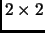
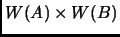

Next:
Wavelet Matrix Multiplication
Wavelet Multiplication
Daniel Beatty
Wavelet Matrix Multiplication
A  example
Conventional Multiplication
Wavelet Transform of two
2 matrices
Product of A and B in wavelet space
What is 
Proof of Wavelet Matrix Multiplication
Chain Multiplication Structure
Practical Implementation
About this document ...
Daniel Beatty 2003-06-03